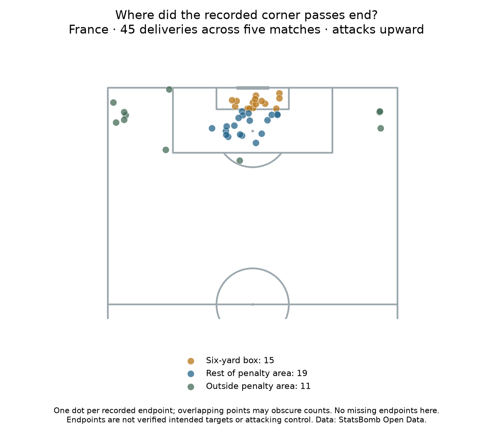

Football analyst training · Phase 2 · Lesson 42
Turn coordinates into useful zones.
We group the recorded pass endpoints of France's 45 corner deliveries into pitch regions.
Completed assignment
- Six-yard box: 15 endpoints.
- Rest of penalty area: 19 endpoints.
- Outside penalty area: 11 endpoints.
- Missing endpoints: zero.

New skill: spatial binning
Use x and y boundaries to give each point a zone label. The six-yard box is inside the penalty area, so test the smaller box first. Every delivery gets exactly one zone.
A recorded endpoint is where the pass is logged as ending. It does not prove where the taker intended to aim or that an attacker controlled the ball.
All deliveries remain included, even failed ones. The observed shot-association rates are 5/15, 11/19 and 3/11 respectively, but they do not establish a best target zone.
Run 42_corner_endpoint_zones.py in Spyder. endpoint_zone() uses coordinate comparisons; it does not fit a model. The worked assignment is complete with assistance. Ask for detail on any new step.